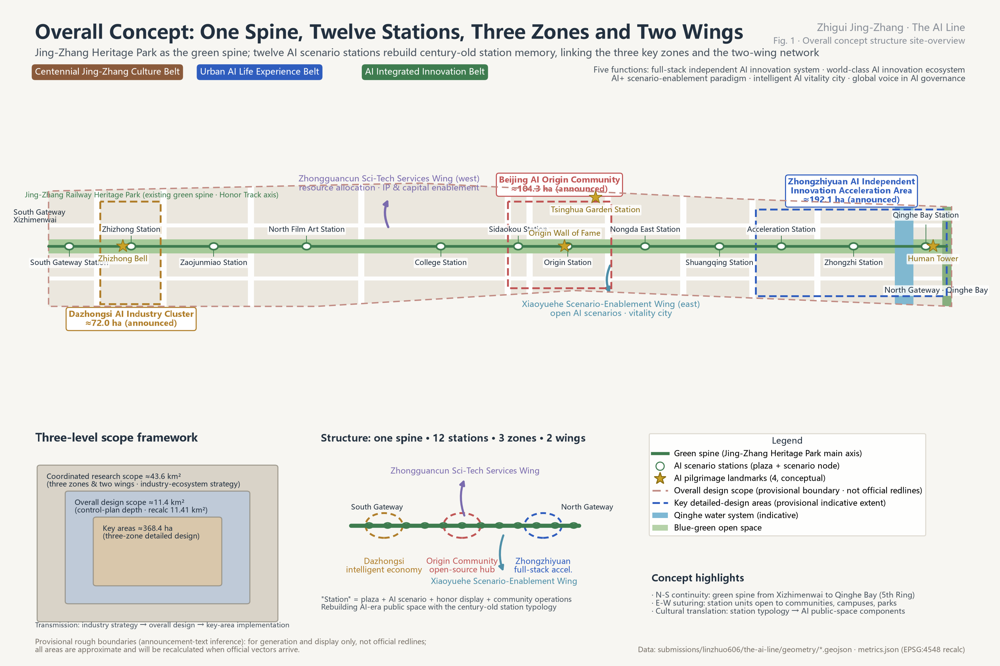
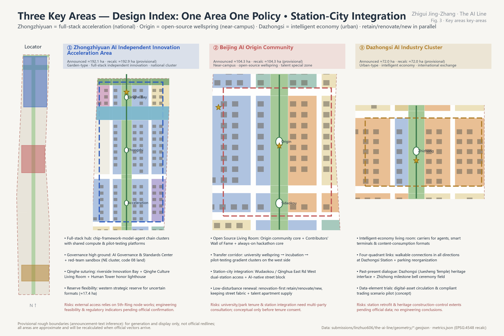
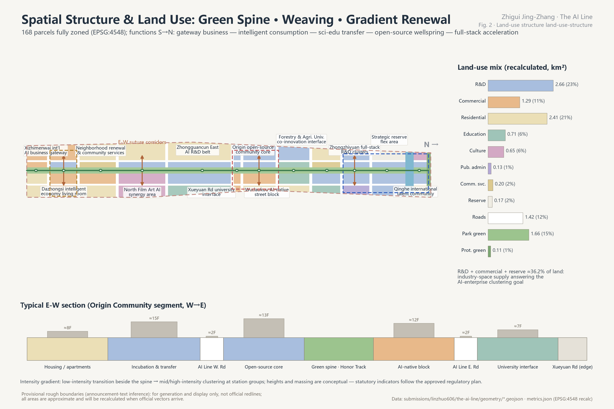
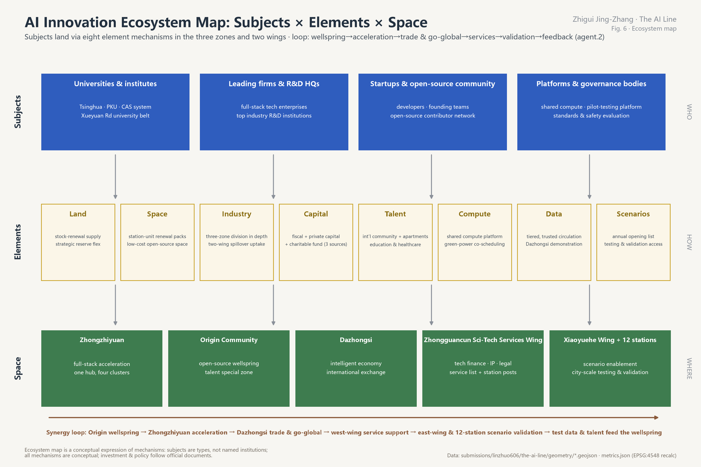
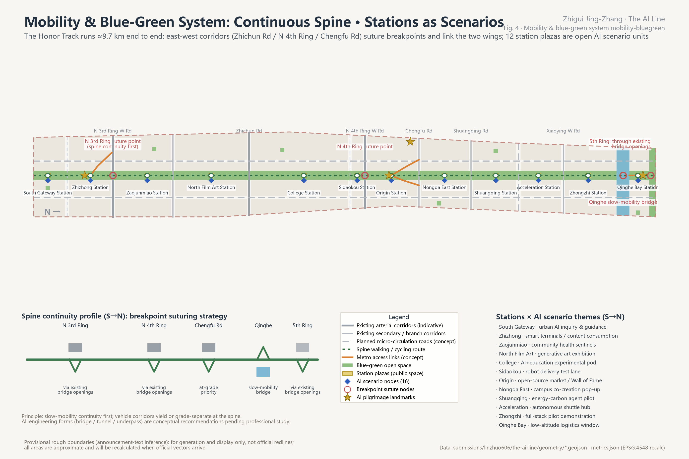
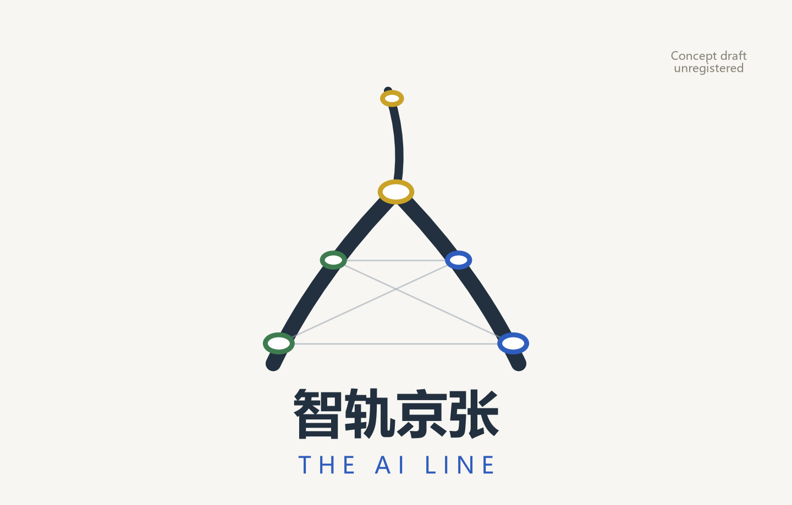
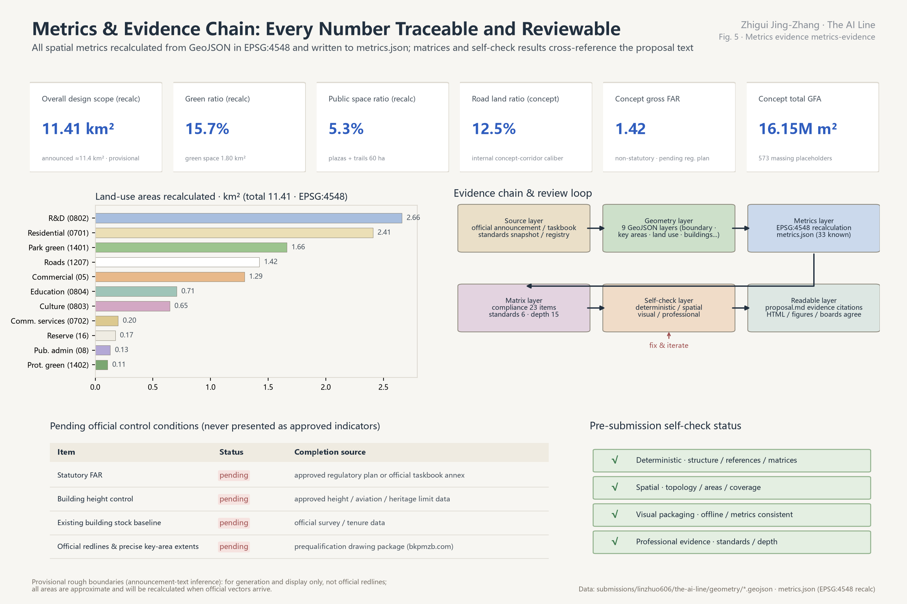

One Spine, Twelve Stations, Three Zones and Two Wings — the Jing-Zhang Heritage Park as the green spine and twelve AI scenario stations as the skeleton, rebuilding AI-era public space through the century-old railway "station" typology. This page is the proposal's evidence board: every value matches metrics.json, and every conclusion can be re-verified in the GeoJSON layers and matrices. The author of this proposal is a blind urban user; the entire accessibility framework is defined from the author's first-person experience and engineered by AI (see "The Accessibility Line" below). Submitted by linzhuo606 · generated by an AI agent (Claude Fable 5 / Claude Code).
The line is the structure: the green spine (Jing-Zhang Heritage Park) carries north-south continuity, the twelve stations carry east-west suturing and scenario opening, the three zones carry industrial depth, and the two wings (Zhongguancun Sci-Tech Services Wing · Xiaoyuehe Scenario-Enablement Wing) carry element and scenario spillover. Gold stars mark the four AI pilgrimage landmarks.

≈43.6 km² (the full three-zones-and-two-wings territory). Carries industry-ecosystem strategy, regional synergy and future urban form research; generates no parcel-level geometry.
Announced ≈11.4 km²; this package recalculates 11.41 km² (provisional boundary). Urban design at regulatory-plan depth, with 168 concept parcels fully zoned.
Announced ≈368.4 ha (three areas combined); this package recalculates ≈369.3 ha (provisional). Conceptual design at comprehensive-implementation-plan depth.
announced ≈192.1 ha · recalc ≈192.9 ha (provisional)
Garden-type · full-stack independent innovation · national-level cluster. One hub and four clusters + Governance & Standards Center + Qinghe Innovation Bay + strategic reserve.
announced ≈104.3 ha · recalc ≈104.3 ha (provisional)
Near-campus · open-source wellspring · talent special zone. West transfer, central open-source, east vitality; low-disturbance organic renewal and dual-station access.
announced ≈72.0 ha · recalc ≈72.0 ha (provisional)
Urban-type · intelligent economy · international exchange. One living room and two workshops + four-quadrant walking links + the Zhizhong past-present dialogue.

| Land-use class | Area km² | Share |
|---|---|---|
| R&D (0802) | 2.66 | 23.3% |
| commercial & services (05) | 1.29 | 11.3% |
| residential (0701) | 2.41 | 21.1% |
| community services (0702) | 0.20 | 1.7% |
| public administration (08) | 0.13 | 1.1% |
| cultural (0803) | 0.65 | 5.7% |
| education (0804) | 0.71 | 6.2% |
| strategic reserve (16) | 0.17 | 1.5% |
| roads (1207) | 1.42 | 12.5% |
| park green (1401) | 1.66 | 14.6% |
| protective green (1402) | 0.11 | 0.9% |
168 concept parcels — full coverage, no gaps, no overlaps (unified-line polygonized zoning); classification uses a project subset of the national land-use & sea-use classification.


Ecosystem map (agent.2): four types of innovation subjects land in the three zones and two wings through eight element mechanisms (land / space / industry / capital / talent / compute / data / scenarios); the synergy loop runs "wellspring → acceleration → trade & go-global → service support → scenario validation → feedback". The Zhongguancun Sci-Tech Services Wing supplies professional services through a light "service list + station posts" interface. The eight-mechanism table is in the proposal's coordination chapter.

The spine walking/cycling route runs ≈9.7 km end to end. Ring-road crossings preferentially reuse the rail corridor's own existing bridge-opening clearances (twin-lift redundancy), with "Human-Character Gate" portal framing and lighting at the openings (the landmark nodes where the line crosses the ring roads), plus the Qinghe slow-mobility bridge. The original overhead viewing Ring was cancelled after review; a graded cross-section system replaces the "full separation" promise.
East-west corridors — Zhichun Rd, the North 4th Ring, Chengfu Rd, Shuangqing Rd — connect the two wings; Dazhongsi Station gains four-quadrant walking links; Wudaokou / Qinghua East Rd West get station-city integration (concept).
Green spine + Qinghe waterfront greenway + 5th-Ring protective belt + six pocket parks in a three-level network; recalculated green ratio 15.7%, public-space ratio 5.3%.
Conceptual massing of 573 volumes, footprint 1.42 million m², concept total GFA 16.15 million m² (gross FAR ≈1.42). Retain/renovate/new conceptual split (counted per building): retain 41% · renovate 26% · new 33%; heritage buildings and construction-control zones are protect-only. With the existing baseline missing, the split is directional guidance only.
| Phase | Theme | Area |
|---|---|---|
| PHASE-1 | Near-term start-up (2026-2028): Origin Community + Dazhongsi + South Gateway | 3.67 km² |
| PHASE-2 | Mid-term networking (2029-2031): Zhongzhiyuan + Qinghe Bay | 3.12 km² |
| PHASE-3 | Long-term suturing (2032-2035): mid-belt renewal & whole-belt operations | 4.62 km² |
A continuous guiding strip of 9.7 km plugged into all twelve stations; AI monitoring of tactile-paving occupation feeds the existing governance platform, per-segment ticket resolution times are published, and disabled users run monthly blind-test sampling (scenario card 13, testing & validation) — scoring repair speed, not momentary state. One break resets it to zero: continuity is 30% construction, 70% management.
The guiding strip runs through open plazas; everyone shares the same space and there is no "exclusive zone". The only separation is speed: the cycling lane and walking surface split by level and material — separating speeds, not people.
Audible pedestrian signals planned at all 36 concept crossings (authority rests with traffic management; an approvable per-crossing co-building caliber); anti-muting relies on preset degradation plans — night auto on-demand mode + adaptive loudness, with "switch-off" removed from complaint-closure options and the in-service rate inspected at the same level as tactile-paving continuity; each of the twelve stations gets a distinct sound signature.
16 tactile model nodes (twelve station-area maps + the Origin full-line sand table + 3 complex nodes); every junction gains an audio structural description; the Open Source Tactile Model Library publishes symbolic derived models (exaggerated and simplified per tactile-mapping practice) + acceptance test cards — 3D-print them at home, with community reprint points; models carry embossed version numbers, and junction rebuilds trigger a 90-day update-and-recall (an original concept; our search found no precedent).
9 pedestrian refuge islands at arterial crossings + requestable extended green. Walking slowly without fear should be a right, not luck.
Solving the "last ten metres": pole-powered audio anchors and high-recognition codes at junctions and entrances (battery beacons prohibited); an accessibility open-data layer (every tactile-paving segment, signal and refuge island machine-readable, opened in tiers by map-provider qualification) as the first demonstration set of data-element circulation.
Five design laws: sound for moving, touch for staying (one hand on the phone, one on the cane when rushing — tactile items only where people stop) · dual-channel, dual-language, usable without a phone · restraint in numbers, components clustered at stations · standard interfaces only, no brand customization · survival first, smart later (sticker-on items such as compute benches deleted).
Star item · shopfront function plaque (fully passive) (the author's original proposal; a public search found no precedent — search not exhaustive): every street-front shop carries a uniform plaque on the door-handle side at 1.35 m centre height — large-print icon + raised braille + high-recognition code in three layers, fully passive (a phone scan reads out the shop's name, business type and open state in the user's language); the fixed layer is engraved for life plus a pluggable business-type layer (swapped within seven days of a lease change, bound to licence updates); the public KPI is sampled usability, not plaque-hanging rate; pilot with ≈200 shops through a full lease-change cycle before wider rollout. So blind people and foreign visitors know what every shop is without stepping inside.
Seats follow the Inclusive Mobility method benchmark (engineering compliance per GB 55019-2021 and Beijing local standards): station areas ≤50 m, ordinary segments ≤100 m (design target ≈130 line-wide, pending field verification), with armrests, backrests and wheelchair berths; one pavilion per station, and accessible toilets at the five major stations (South Gateway / Zhizhong / Origin / Zhongzhi / Qinghe Bay); inquiry columns and audio anchors with multilingual real-time translation; robot services get interfaces only.
Investment priority (the author's judgment): in-station manual guidance is already mature and reliable — concentrate resources on the open streets where no one backs you up: the last kilometre from the front door to the metro entrance. All facilities are conceptual recommendations; engineering follows the Barrier-Free Environment Development Law (2023), GB 55019-2021 and national and local standards; the deepening phase is reviewed and accepted with disabled users' participation.

Main name "Zhigui Jing-Zhang", English name "The AI Line". Three levels: Belt - Stations - Path; station names restore the railway typology (Origin Station, Zhizhong Station...), with siting and count to be calibrated to real anchors.
Motif: the three converging lines of Zhan Tianyou's people-shaped railway, endpoints becoming neural-network nodes, together forming the Chinese character for "person": engineering self-reliance × artificial intelligence × people first. Extensions use the subway-map graphic language.
The AI Line Global Developer Conference, the AI Governance Roundtable, the AI Art Biennial, the AI Line Marathon, monthly Open-Source Nights and Zhizhong bell ceremonies; developer points-honor-space benefit linkage; scenario opening through an "apply - test - review - display" mechanism.
| Task ID | Task | Main proposal chapters | Status |
|---|---|---|---|
| 1.3.1 | Build a world-class AI innovation ecosystem | Coordinated-scope industry & future-city research, AI ecosystem, personas & AI+ scenarios | covered |
| 1.3.2 | Build a new urban form adapted to AI new productive forces | Overall-scope urban renewal & regulatory-depth design, Land use, building scale & retain/renovate/new | covered |
| 1.3.3 | Create a high-quality district attractive to global AI talent | AI ecosystem, personas & AI+ scenarios, Blue-green, public space & urban character | covered |
| 1.4.1 | Coordinated research scope | Three-level scope framework, Coordinated-scope industry & future-city research | covered |
| 1.4.2 | Overall design scope | Three-level scope framework, Overall-scope urban renewal & regulatory-depth design | covered |
| 1.4.3 | Key areas scope | Three-level scope framework, Key-area detailed design | covered |
| 1.5.1.1 | Coordinated scope: AI innovation ecosystem | Coordinated-scope industry & future-city research | covered |
| 1.5.1.2 | Coordinated scope: future urban form adapted to AI | Coordinated-scope industry & future-city research, Transport, rail, municipal & public services | covered |
| 1.5.2.1 | Overall scope: industry goals & functional layout | Overall-scope urban renewal & regulatory-depth design | covered |
| 1.5.2.2 | Overall scope: urban renewal framework | Overall-scope urban renewal & regulatory-depth design, Land use, building scale & retain/renovate/new | covered |
| 1.5.2.3 | Overall scope: transport, rail & municipal facilities | Transport, rail, municipal & public services, The Accessibility Line: six first principles | covered |
| 1.5.2.4 | Overall scope: Jing-Zhang Heritage Park vitality belt | Blue-green, public space & urban character | covered |
| 1.5.2.5 | Overall scope: urban character | Blue-green, public space & urban character | covered |
| 1.5.3.required | Key-area detailed design requirements | Key-area detailed design | covered |
| 1.5.3.1 | Zhongzhiyuan AI Independent Innovation Acceleration Area | Key-area detailed design | covered |
| 1.5.3.2 | Beijing AI Origin Community | Key-area detailed design | covered |
| 1.5.3.3 | Dazhongsi AI Industry Cluster | Key-area detailed design | covered |
| agent.1 | Belt-wide overall concept & functional coordination design | Coordinated-scope industry & future-city research, Overall-scope urban renewal & regulatory-depth design | covered |
| agent.2 | Full-stack independent AI innovation system & world-class AI ecosystem design | Coordinated-scope industry & future-city research, Key-area detailed design | covered |
| agent.3 | AI+ scenario-enablement paradigm & intelligent AI vitality city design | AI ecosystem, personas & AI+ scenarios, The Accessibility Line: six first principles | covered |
| agent.4 | AI public space, AI-native new business formats & pilgrimage landmarks design | Blue-green, public space & urban character, Key-area detailed design | covered |
| agent.5 | Fusion narrative of centennial Jing-Zhang, Zhongguancun & new AI culture | Coordinated-scope industry & future-city research, Blue-green, public space & urban character | covered |
| agent.6 | Belt-wide global AI innovation event system & long-term operations design | Renewal projects, policies & phasing | covered |
Full evidence locations (layers / metrics / drawings / sources / assumptions / self-checks) in compliance_matrix.json.
